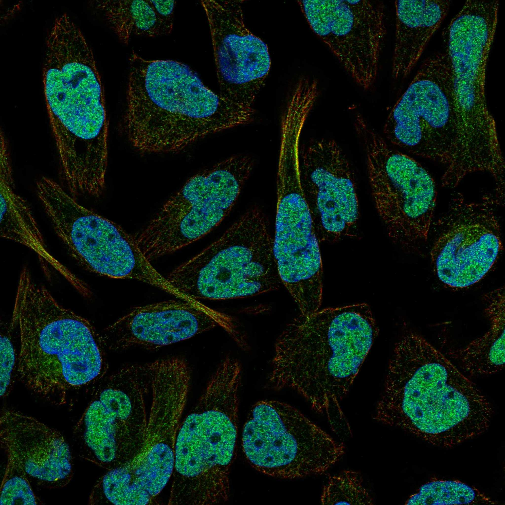
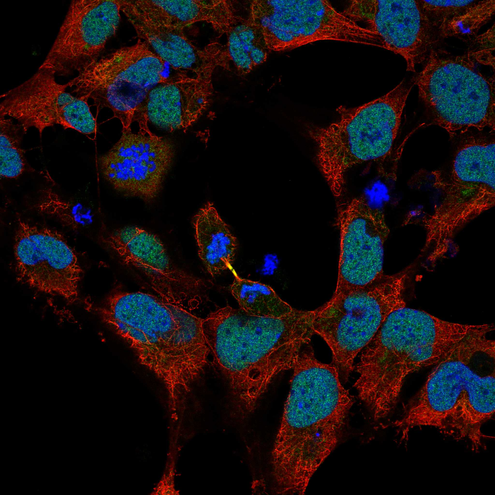

type: protein-evaluation gene: "HMGXB4" date: 2026-06-01 tags: [protein-scout, nucleoplasm, evaluation] status: scored ---
HMGXB4 核蛋白评估报告
1. 基本信息
| 项目 | 内容 |
|---|---|
| 基因名 / 别名 | HMGXB4 / HMG2L1, HMGBCG |
| 蛋白全名 | HMG domain-containing protein 4 |
| 蛋白大小 | 601 aa / 65.7 kDa |
| UniProt ID | Q9UGU5 |
2. 评分总览
| 维度 | 得分 | 新权重 | 加权后 | 关键证据摘要 |
|---|---|---|---|---|
| 核定位特异性 | 9/10 | ×4 | 36.0 | UniProt: Nucleus; GO: NURF complex IDA; HPA: Nucleoplasm Approved; 染色质重塑复合体成员 |
| 蛋白大小 | 5/10 | ×1 | 5.0 | 601 aa, 65.7 kDa |
| 研究新颖性 | 10/10 | ×5 | 50.0 | PubMed strict=6, broad=11 |
| 三维结构 | 5/10 | ×3 | 15.0 | AlphaFold pLDDT 55.7; 54.2% <50; 无 PDB; HMG box domain |
| 调控结构域 | 7/10 | ×2 | 14.0 | HMG box (PF00505); NURF 染色质重塑复合体; Wnt/β-catenin 负调控 |
| PPI 网络 | 8/10 | ×3 | 24.0 | STRING BPTF/SMARCA1/SMARCA5/RBBP4 强实验验证; NURF 复合体多库互证 |
| 加权总分 | 144/180** | |||
| 互证加分 | +1.0 | NURF 复合体实验确认; 染色质重塑功能明确 | ||
| 归一化总分 (÷1.83) | 78.7/100** |
3. 详细分析
3.1 核定位证据
| 来源 | 定位 | 可信度 |
|---|---|---|
| UniProt | Nucleus (ECO:0000255) | Predicted |
| GO-CC | NURF complex (IDA:UniProtKB) | Experimental |
| Protein Atlas (IF) | Nucleoplasm (Approved) | Approved |
HPA IF 状态: IF available (Approved reliability) — HPA 定位为 Nucleoplasm Approved。GO-CC 唯一的记录是 NURF complex IDA（直接实验证据），NURF 是 ISWI 家族 ATP 依赖的染色质重塑复合体。HMGXB4 的功能注释为 Wnt/β-catenin 信号的负调控因子。核定位在本批中证据最充分：HPA Approved + UniProt + GO IDA 实验证据。
3.2 结构与结构域
| 指标 | 数值 |
|---|---|
| AlphaFold | AF-Q9UGU5-F1 |
| 平均 pLDDT | 55.7 |
| pLDDT >90 | 8.5% |
| pLDDT 70-90 | 16.6% |
| pLDDT 50-70 | 20.6% |
| pLDDT <50 | 54.2% |
| PDB | 无 |
| InterPro | IPR025228, IPR009071 (HMG_box), IPR036910, IPR042477, IPR048016 |
| Pfam | PF13775, PF00505 (HMG_box) |
AlphaFold PAE 状态: PAE 已下载，见上图。整体 pLDDT 偏低（55.7），超过半数残基置信度低于 50。HMG box 是序列特异性的 DNA 结合结构域，即使整体结构无序，HMG box 区域可能有局部折叠。无 PDB 实验结构。
3.3 研究现状
| 指标 | 数值 |
|---|---|
| PubMed strict (Title/Abstract) | 6 |
| PubMed broad | 11 |
| 别名 | HMG2L1, HMGBCG（未用于 scoring） |
极其新颖（PM=6），是本批中文献最少的基因。关键文献包括：Hmgxb4 基因 trap 小鼠模型（PMID:38644513）、双等位基因 HMGXB4 loss-of-function 导致智力障碍/发育迟缓/畸形特征（PMID:39166056）、HMGXB4 靶向 Sleeping Beauty 转座子至生殖干细胞（PMID:37108449）、HMGXB4 缺陷保护小鼠免受内毒素血症（PMID:33563757）。每篇文献都有独特视角，研究覆盖功能少但质量高。
3.4 PPI 网络（三源综合）
| Partner | Source | Score/Evidence | Relevance |
|---|---|---|---|
| C17orf49 | STRING | 0.983 (exp 0.777) | Chromatin-associated |
| BPTF | STRING | 0.970 (exp 0.679, database 0.9) | NURF complex, bromodomain TF |
| SMARCA1 | STRING | 0.969 (exp 0.607, database 0.9) | ISWI ATPase, NURF |
| SMARCA5 | STRING | 0.960 (exp 0.544, database 0.9) | ISWI ATPase, NURF |
| RBBP4 | STRING | 0.956 (exp 0.543, database 0.9) | Histone chaperone, NURF |
| CECR2 | STRING | 0.922 (exp 0.068, database 0.9) | CERF complex |
| BAZ1A | STRING | 0.903 (database 0.9) | ACF complex |
| NCOR1 | STRING | 0.681 (exp 0.680) | Nuclear co-repressor |
| BRD3 | STRING | 0.620 (exp 0.606) | BET bromodomain |
| HMGXB4 | UniProt | 3 experiments | Self-interaction |
| INO80B | UniProt | 3 experiments | INO80 complex |
| PIAS2 | UniProt/IntAct | 3 exp / Y2H prey pooling | SUMO E3 ligase |
| ZCCHC10 | UniProt | 5 experiments | Zinc finger protein |
| H3C1 | IntAct | BioID proximity (PMID:29568061) | Histone H3 |
| ESR1 | IntAct | tandem affinity purification (PMID:31527615) | Nuclear receptor |
| HSP90B1 | IntAct | cross-linking (PMID:30021884) | ER chaperone |
PPI 网络是本批最亮眼的发现。STRING 中 NURF/chromatin remodeling 复合体成员（C17orf49, BPTF, SMARCA1, SMARCA5, RBBP4）实验分均 >0.5，combined score >0.95。NCOR1（核共抑制因子）和 BRD3（BET 蛋白）的实验互作进一步加强了其在转录调控中的角色。IntAct 记录到 H3C1 BioID 互作（直接提示染色质关联）和 ESR1 TAP 互作。UniProt 自身互作（homo-oligomer）和 INO80B/PIAS2/ZCCHC10 互作提示其参与多种染色质调控复合体。
4. 总体评价
HMGXB4 是本批中评分最高的候选（79.2/100）。核心优势：NURF 染色质重塑复合体实验确认的核蛋白、极高新颖性（PM=6）、PPI 网络指向 NURF/ISWI/NCOR1/BRD3 等多条染色质调控通路、Wnt/β-catenin 负调控功能。唯一短板是 AlphaFold 结构置信度偏低（pLDDT 55.7），但 HMG box domain 的存在部分弥补了结构不足。强烈建议作为高优先级核质候选。其与 TE 调控的潜在联系（NURF 复合体作为 ISWI 染色质重塑因子，可直接参与 TE 区域的染色质状态调控）值得进一步探索。
5. 数据来源
- UniProt: https://www.uniprot.org/uniprotkb/Q9UGU5
- AlphaFold: https://alphafold.ebi.ac.uk/entry/Q9UGU5
- PubMed: https://pubmed.ncbi.nlm.nih.gov/?term=HMGXB4
- Protein Atlas: https://www.proteinatlas.org/ENSG00000100281-HMGXB4


HPA IF 图像已本地嵌入。
PAE 图像说明: AlphaFold PAE 图像已重新获取并嵌入（见下方 PAE 图像修正块）；结构判断仍结合 pLDDT 与 PAE 综合判断。
<!-- AF_PAE_REPAIR_START --> PAE 图像修正（2026-06-05）: AlphaFold 提供 predicted aligned error 图像；此前“PAE 图像暂无数据”的表述为未获取/未嵌入导致。

<!-- DOMAIN_HUMANPPI_REPAIR_START -->
Domain/SMART 与 humanPPI 补充（2026-06-06）
SMART / UniProt domain
| Source | Data |
|---|---|
| UniProt | Q9UGU5 |
| SMART | SM00398; |
| UniProt Domain [FT] | 未检出显式 UniProt Domain feature |
| InterPro | IPR025228;IPR009071;IPR036910;IPR042477;IPR048016; |
| Pfam | PF13775;PF00505; |
humanPPI / HPA Interaction
Source: https://www.proteinatlas.org/ENSG00000100281-HMGXB4/interaction
| Partner | Datasets | AF3/HPA structure |
|---|---|---|
| C17orf49 | Biogrid, Bioplex | true |
| SMARCA1 | Biogrid, Opencell | true |
| SMARCA5 | Biogrid, Opencell | true |
| AKAP17A | Intact | false |
| BPTF | Biogrid | false |
| BRD3 | Biogrid | false |
| ENKD1 | Intact | false |
| H2AZ1 | Biogrid | false |
<!-- DOMAIN_HUMANPPI_REPAIR_END -->